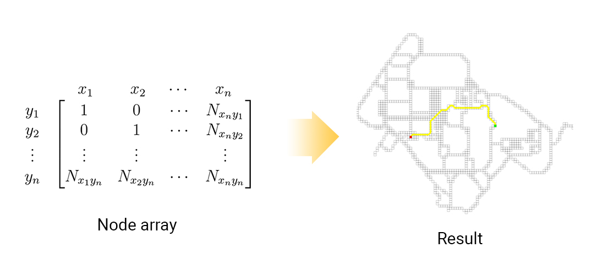

In this project, we would like to explore and solve ‘the most efficient path to transverse between buildings in KMUTT’ problem. In many times, standing at an intersection and asking yourself, “What is the shortest path to get to building A” or “How can I get to building B quickest”. This problem is difficult to solve for humans because of our perceptions which are different from people to people. In fact, we can lose our time and important opportunity by using inefficient path. Moreover, using online tools such as Google Maps can give you inaccurate answer as it can only process roadways, not footpath or shortcuts between buildings. So, we want to apply our discrete mathematics knowledge to this problem.
Graph is a mathematical model that simulate problems that can be represent with dots (called Vertex or Node) and lines connected dots (called Edge). For example: train network, electrical circuit.
A Graph
A graph is consisted of two sets
V\left(G\right)=\left\{V_1,V_2,V_3,V_4\right\}
E\left(G\right)=\left\{e_1,e_2,e_3,e_4\right\}
Sets of a graph
Weighted graph is graphs that has a weight on the edge. The weight might represent the distance relatively in real life, or represent other relationship between nodes.
Weighted Graph
There are 2 basic searching algorithm for a graph
These two algorithms are good for weighted graph that has different weight. But if you put these algorithms in an equally weighted graph, both of them will work as the same algorithm. So, there is an modify version of Breath-first Search called ‘Greedy Best First Search’.
Greedy Best First Search uses heuristic function to visit node which is closer to the target node. By visiting node by node that is closer and closer to the target, it is a very fast and effective algorithm with graph that have equal edge weight. However, it is not garunteed that the path is optimal or the shortest one.
Yet, there is an algorithm that combined good side of both algorithm together called ‘A* Search Algorithm’ which will be explained later.
Heuristic functions is functions that estimated the distance between current node and target node. There are several heuristic functions:
When D is the cost of a move.
Each heuristic function fits in different settings of the algorithm. If you are using quarto-directional algorithm, Manhattan heuristic function will be the fittest. If you are using octo-directional algorithm which treat diagonal movement equally to side movement, Chebyshev will fit. And, if you can move freely in 2 dimentional space, Euclidean heuristic function will fit the most.
A* search algorithm is an algorithm which use heuristic function in calculation for the shortest path. Because A* search algorithm did not apply calculation for every node in the graph, it is very popular algorithm to use because of its good performance.
When A* algorithm is applied, it performs calculation f(x) = g(x) + h(x) to neighbor nodes of the starting node, which g(x) is the cost (how much it takes from the starting node to it), and h(x) is the heuristic value (how long from it to the target node). By traversing to the next lowest f(x) node and perform the same calculation to the node’s neighbors one by one, you will be ended up with the shortest path from the starting node to the target node.
The result will be considered optimal when heuristic function, that applied to the algorithm, is never overestimated the cost of the real cost. For example, you are walking from Canteen to Witsawa Watthana building. Your friend said, "Female dormitory is close to Witsawa Watthana building!" (Underestimated cost). You trust your friend so much that you started thinking about getting from there to your destination. But then, you will realize that the path from canteen to female dormitory is quite close even before reach the dormitory. Then, you will stop looking to that path and find better path.
Consider same example, but this time your friend said, "The road in front of Classroom Buiding 4 takes a million kilometers to reach!" (Overestimated cost). You still trust your friend so much and won't take any look at it. In the end, you will ended up with the worse path than the underestimate one.
At first, we tried to make our own graph base on the map. But then, we realized that if we treat each pixel of the picture as a node, we could do it easier. So, we get a map picture of the university, and draw every single path that we know onto it. Then, we scale down the image to considerable size so computer doesn't have to perform much calculation, but lower accuracy. 3. Our code convert the image into nodes by looking on pixel by pixel and create a node on available pixel and store it into 2D array. 4. We apply the algorithm to the data. For the configuration, we let the algorithm going in all 8 directions, and we use Chebyshev's heuristic function because it is suitable for 8 directional movement.  You can try our interactive map on the top of this page.